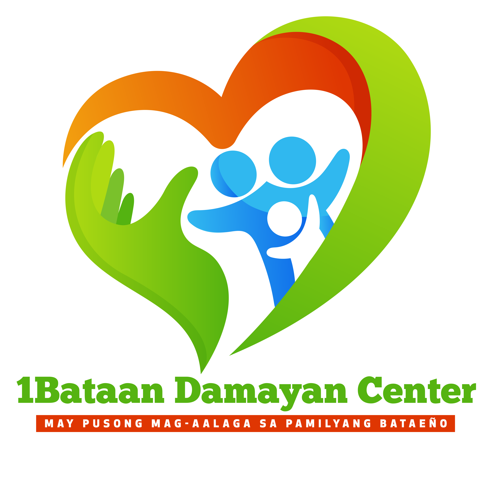

 Provincial Government of Bataan - Special Assistance Program
Home
What assistance are you applying for? Please choose below.
(Ano ang gusto mong applyan na assistance? Maari kang pumili sa baba)
FINANCIAL ASSISTANCE FOR MEDICINES
FINANCIAL ASSISTANCE FOR BURIAL
IMPLANT BAKAL
FINANCIAL ASSISTANCE FOR MEDICINES REQUIREMENTS
Updated Medical Certificate/Medical Abstract (1 ORIGINAL, 1 PHOTOCOPY)
Reseta ng Gamot NOTE: 1st & 2nd checks same date, same doctor, same signature with Doctor's License No.
(2 PHOTOCOPIES)
Sulat (SULAT KAMAY) na humihingi ng tulong kay Gov. Joet S. Garcia
Xerox Valid ID ng Pasyente w/ 3 signatures or Xerox Valid ID ng Naglalakad w/ 3 signatures
Brgy. Indigency (Pasyente) / Brgy. Indigency (Representative)
SUPPORTING DOCUMENTS
Xerox copy ng Birth Certificate (Kung anak o magulang ang pasyente)
Xerox ng Marriage Certificate (Kung asawa ang pasyente)
Birth Certificate and Marriage Certificate (ng magulang kung kapatid ang pasyente)
FINANCIAL ASSISTANCE FOR BURIAL REQUIREMENTS
Registered Death Certificate (2 PHOTOCOPIES)
Funeral Contract with Balance (2 PHOTOCOPIES)
Promissory Note or Certification with Balance (1 ORIGINAL, 1 PHOTOCOPY)
Sulat (SULAT KAMAY) na humihingi ng tulong kay Gov. Joet S. Garcia
Xerox Valid ID ng Pasyente w/ 3 signatures or Xerox Valid ID ng naglalakad
Brgy. Indigency (Pasyente) & Brgy. Indigency (Naglalakad)
SUPPORTING DOCUMENTS
Xerox copy ng Birth Certificate (Kung anak o magulang ang pasyente)
Xerox ng Marriage Certificate (Kung asawa ang pasyente)
Birth Certificate and Marriage Certificate (ng magulang kung kapatid ang pasyente)
REQUIREMENTS FOR IMPLANT BAKAL
Request ng Doctor para sa Implant (may pirma at license # ng Doctor)
Quotation at halaga ng Bakal (may pirma at license # ng Doctor)
Medical Abstract (may pirma at license # ng Doctor)
Sulat (SULAT KAMAY) na humihingi ng tulong kay Gov. Joet S. Garcia
SUPPORTING DOCUMENTS
Xerox copy ng Birth Certificate (Kung anak o magulang ang pasyente)
Xerox ng Marriage Certificate (Kung asawa ang pasyente)
Birth Certificate and Marriage Certificate (ng magulang kung kapatid ang pasyente)
Affidavit of Cohabitation kung mag live-in partner o katunayag nagsasama ngunit hindi pa kasal
Xerox ng Cedula
Xerox Valid ID ng Naglalakad
Authorization Letter ng Pasyente
Get a schedule